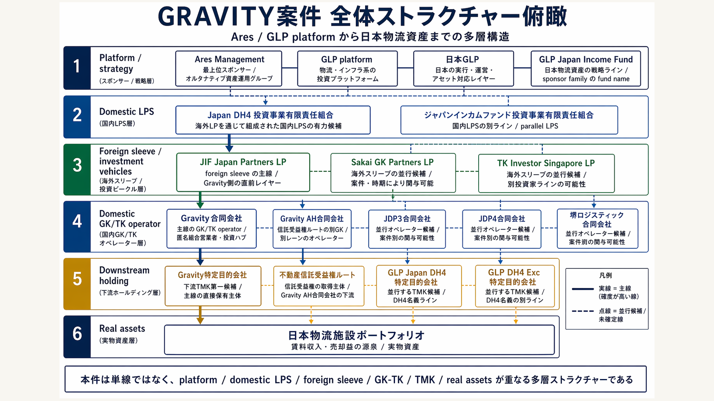
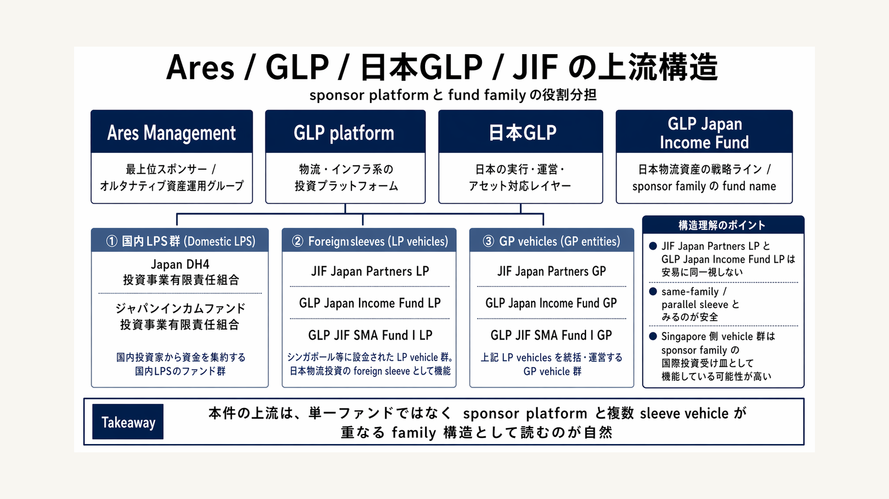
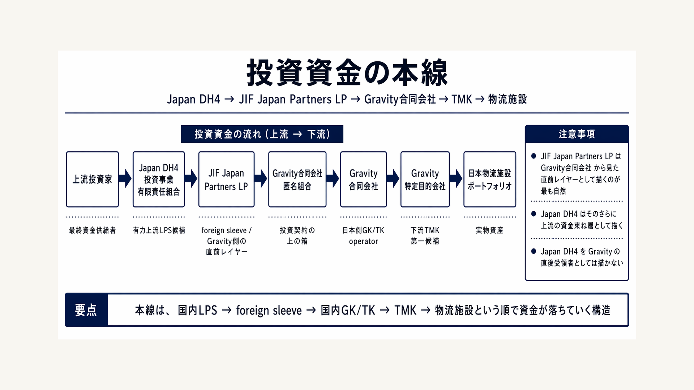
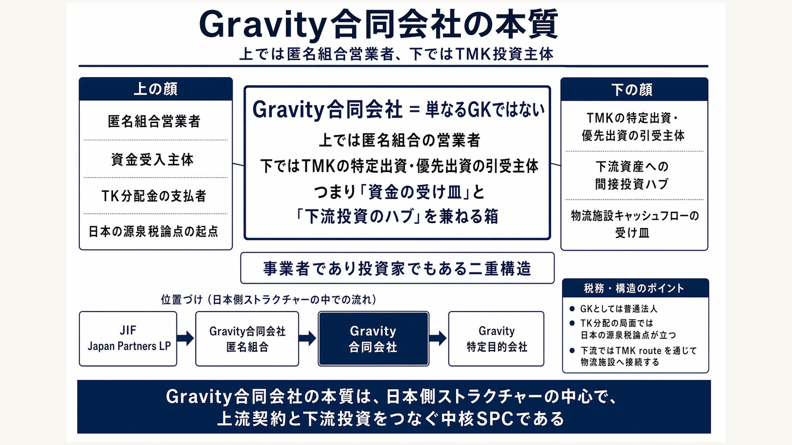
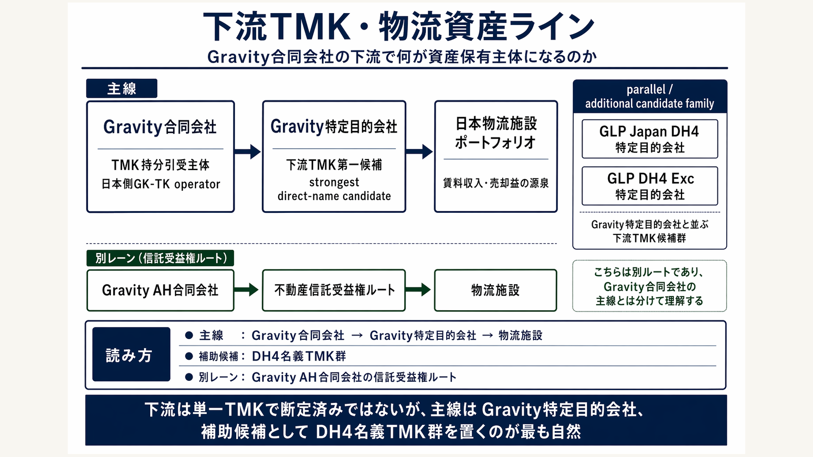
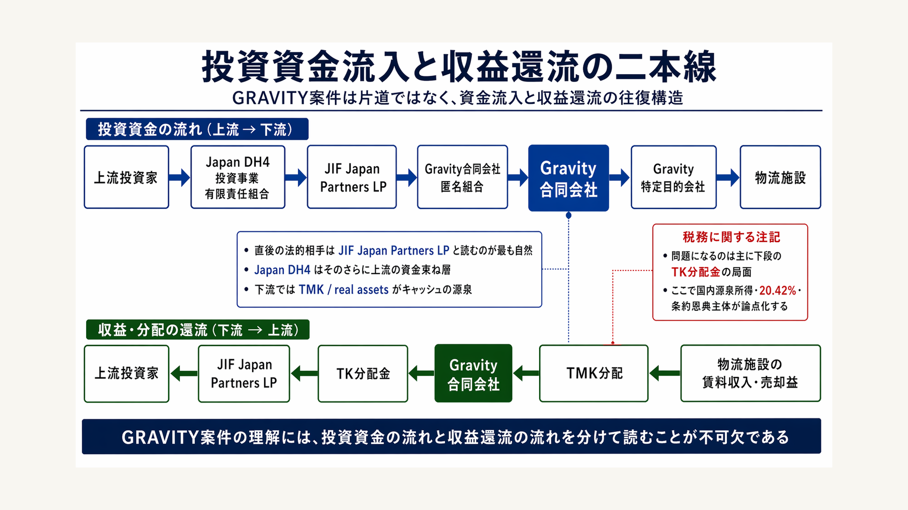
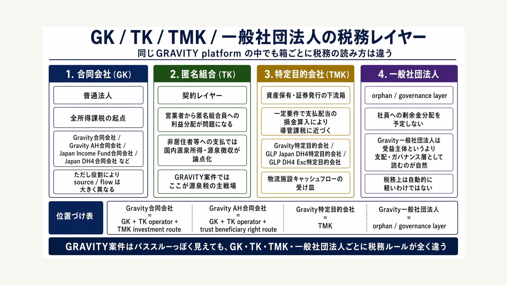
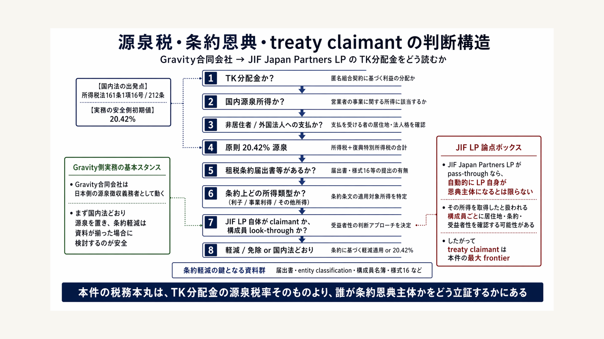
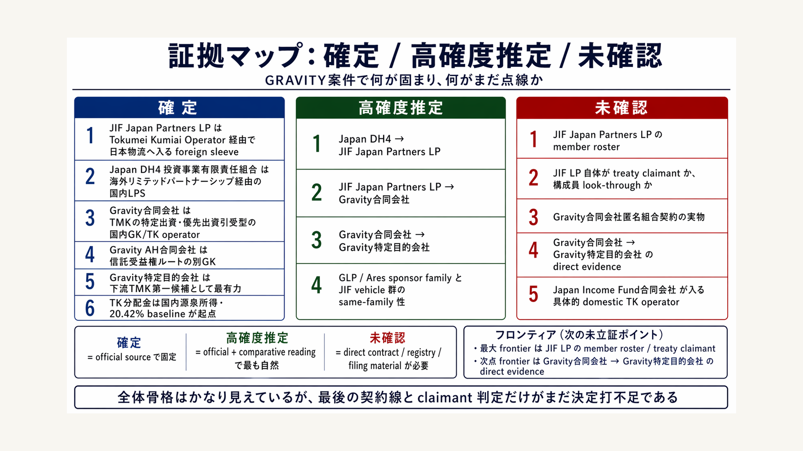
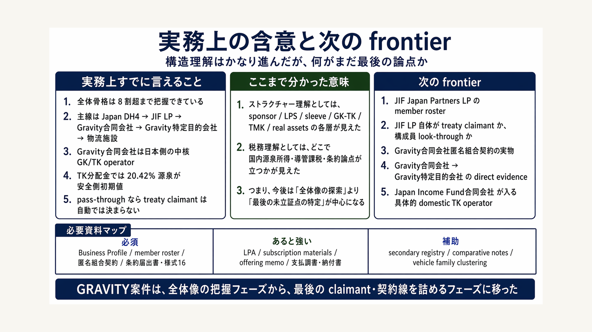

Core Read
公開資料ベースの最良読解は、Japan DH4系資金 → JIF Japan Partners LP → Gravity合同会社側 → Gravity特定目的会社 / 物流資産ライン。ただし一部はなお高確度推定にとどまる。
これまで /mnt/d/Users/PC/Desktop/tax/gravity_tk_tmk_project と
/mnt/d/Users/PC/Desktop/その他/GRAVITY_匿名組合源泉税条約恩典メモ_20260422
に蓄積した調査資産を、確定した事実、高確度の推定、
まだ未立証の frontier に切り分けながら再編した包括版アトラス。
Ares / GLP 系 sponsor family、国内LPS、foreign sleeve、GK / TK、TMK、物流資産、
そして源泉税・条約論点までを、1枚ずつ焦点をずらしながら整理する。
公開資料ベースの最良読解は、Japan DH4系資金 → JIF Japan Partners LP → Gravity合同会社側 → Gravity特定目的会社 / 物流資産ライン。ただし一部はなお高確度推定にとどまる。
Gravity合同会社 は、公開資料の読みでは日本側の匿名組合営業者であり、同時に下流TMKへの出資ハブとして機能する中核GKとみるのが自然。
税務の本丸は Gravity合同会社からのTK分配金 と 誰を treaty claimant とみるか。条約届出がなければ 20.42% が出発点になる。
最後の詰めどころは、JIF Japan Partners LP の member roster / treaty claimant と Gravity合同会社 → Gravity特定目的会社 を直接つなぐ資料。
本件を単線のSPC図としてではなく、スポンサー群 / 国内LPS / 外国LPスリーブ / 日本側GK・TK / 下流TMK・資産 の多層構造として捉えるための起点図。

公開資料から見えているレイヤー構造と、そこに重なる主線候補を1枚に集約する。
後続の税務図や証拠図を読む前提として、確定した層と推定の層を混ぜないため。
いちばん筋の通る読みは Japan DH4系 → JIF LP → Gravity合同会社 → Gravity特定目的会社 / 物流資産 だが、最後の矢印にはなお未立証部分が残る。
スポンサー・日本実行レイヤー・strategy line・foreign sleeve family を切り分け、JIF vehicle 群を同一familyの中で並べ直す。

JIF Japan Partners LP と GLP Japan Income Fund LP を安易に同一視せず、same-family / parallel sleeve として扱う。
foreign sleeve の箱を誤ると、条約 claimant と上流投資家の整理が崩れるため。
Singapore 側 vehicle 群は sponsor family の国際投資受け皿として理解するのが最も自然。
2枚目は、GRAVITY案件を「日本側の箱」だけで読んだときに見落としやすい、上流 sponsor family の構造を整理する図です。本件では Ares、GLP platform、日本GLP、GLP Japan Income Fund、さらにそれにぶら下がる複数の LP / GP vehicle が登場しますが、ここでの注意点は、似た名前の vehicle を短絡的に同一視しないことです。たとえば JIF Japan Partners LP と GLP Japan Income Fund LP は、同じ family の中にいる近い箱である可能性は高いものの、直ちに「同一主体」と断定するのは危険です。むしろ sponsor family の中で役割分担された parallel sleeve、あるいは investor type ごとに分けられた別箱として読む方が、今ある一次資料には整合的です。
この図が税務上も重要なのは、上流 family の切り方がそのまま treaty claimant 問題に接続するからです。もし foreign sleeve を誤認すると、「誰が実際に日本側からの分配の直後受領者なのか」「誰を居住者として条約判定すべきか」「entity claimant なのか look-through なのか」という論点が一段ずつずれてしまいます。本図では、Ares / GLP / 日本GLP を sponsor / platform / Japan execution layer として整理し、その下に strategy line と multiple sleeves を並べることで、「上流は一本のファンドではなく、family 構造そのものとして理解すべきだ」という感覚を定着させる狙いがあります。言い換えれば、この図は案件理解のための“組織図”であると同時に、後の源泉税・条約論点の誤射を防ぐための“前提条件整理図”でもあります。
公開一次ソース: FSA QII 01_b、Ares Exhibit 21.1、SGX FY2023 Financial Statements、GLP JIF launch article
法的な直前相手と経済的な上流を混同せず、上流投資資金がどの順番で下流資産へ落ちていくかを一本線で示す。

JIF Japan Partners LP を Gravity 側の直前レイヤー、Japan DH4 をその上流LPSとして描く。
直前受領者と上流資金束ね層を取り違えると、分配と条約の論点が崩れる。
本線は 上流投資家 → Japan DH4 → JIF LP → Gravity合同会社匿名組合 → Gravity合同会社 → Gravity特定目的会社 → 物流施設。
3枚目は、これまでの調査で最も重要な「主線」の仮説を一本の矢印に落とし込んだ図です。ここで押さえたいのは、Japan DH4 と JIF Japan Partners LP の位置関係です。会話だけで追っていると、この2つがしばしば同じ高さに見えてしまいますが、構造上はそうではありません。現時点の最良読解では、Japan DH4 投資事業有限責任組合 は国内LPSとして foreign sleeve に資金を渡す上流層に位置し、JIF Japan Partners LP がそのさらに下で、日本側 Tokumei Kumiai Operator に入る直前レイヤーとして機能している可能性が最も高い、というのが整理の芯です。したがって、JIF LP を Gravity 側の“直前相手”として置き、Japan DH4 をその上の資金束ね層として置くことには、見た目以上に大きな意味があります。
この違いは、後で出てくる源泉税と treaty claimant の論点に直結します。もし Japan DH4 を直後受領者のように描いてしまうと、Gravity合同会社 から誰に分配金が支払われるのか、誰を相手に届出書や条約判定を考えるべきかがずれてしまいます。逆に、この図のように 上流投資家 → Japan DH4 → JIF LP → Gravity合同会社匿名組合 → Gravity合同会社 → TMK → 物流施設 と順に落としていけば、「経済的な上流」と「法的に直前のカウンターパーティ」を分けて読むことができます。本図は単なる資金の流れ図ではなく、後の税務分析に耐えるように関係の深さを調整した“優先順位付きの主線図”です。だからこそ、ここでの線の引き方は、後ろの図の説得力を支える土台になります。
公開一次ソース: FSA tokurei 012、FSA QII 01_b、data.gov.sg Entities Registered with ACRA
上では匿名組合営業者、下ではTMK持分引受主体という二重機能を持つため、単なるGKではなく日本側の中心SPCとして読む必要がある。

匿名組合営業者、資金受入主体、TK分配金の支払者としての顔。
TMKの特定出資・優先出資の引受主体、下流投資ハブとしての顔。
事業者であり投資家でもある という二重構造が、本件の読み筋を決める。
4枚目は、GRAVITY案件全体の中でもっとも重要な主体である Gravity合同会社 の“本質”だけを抜き出した図です。本件を複雑に感じさせる最大の原因は、Gravity合同会社 が一つの箱で二つの顔を持っていることにあります。上の契約レイヤーでは、同社は匿名組合営業者として資金を受け入れ、匿名組合員に対する分配の支払者になります。他方、下の投資レイヤーでは、TMKの特定出資・優先出資を引き受け、物流施設ポートフォリオへ間接投資する主体として振る舞います。つまり、法的には事業者、経済的には投資ハブという、役割の切り替えを1つの合同会社が担っているわけです。ここを理解せずに「単なるGK」とだけ読むと、なぜ源泉税論点と下流資産論点が同じ箱に集まるのかが見えません。
この図の狙いは、Gravity合同会社 を「資金の受け皿」と「下流投資の接続点」という二つの視点から同時に読ませることにあります。税務上もこの二重性が重要で、上の顔の局面では TK分配金 と国内源泉所得、源泉徴収義務、条約届出が問題になりますが、下の顔の局面では TMK との接続、資産キャッシュフローの吸い上げ、導管課税に近づくかどうか、といった別の論点が立ち上がります。つまり、本件の多くの複雑さは、プレイヤーが多いからではなく、「一つの箱に違う種類の論点が重なっている」から生じています。この図を真ん中に置くと、以後の図がすべて Gravity合同会社 を中心に放射状に展開している理由も自然に理解できます。
公開一次ソース: FSA tokurei 011、FSA tokurei 012、FSA 特定目的会社届出一覧
主線は Gravity特定目的会社、補助候補は DH4 名義TMK群、別レーンとして Gravity AH の信託受益権ルートを切り分ける。

Gravity特定目的会社 が現時点での strongest direct-name candidate。
GLP Japan DH4特定目的会社 / GLP DH4 Exc特定目的会社 は parallel / additional candidate family。
Gravity AH合同会社は信託受益権ルートであり、Gravity合同会社の主線と混ぜない。
5枚目は、Gravity合同会社 の下流に何がいるのか、どこまでを主線として描き、どこから先を補助候補として扱うべきかを整理するための図です。この領域は、上流の sponsor family よりもさらに誤読が起こりやすい箇所です。というのも、名称が近い TMK 群が複数あり、しかも公式資料と secondary trace を重ねないと線が見えてこないからです。現時点では、Gravity特定目的会社 が下流TMK第一候補として最も強い位置にあります。名称の一致、八重洲クラスターとの整合、旧名称の改称痕跡などを踏まえると、主線としてここを置くのが一番自然です。一方で、GLP Japan DH4特定目的会社 と GLP DH4 Exc特定目的会社 も、別ラインの並行候補として無視できません。したがって、この図では主線と補助候補を同じ重みで描かず、読み手の視線がまず Gravity特定目的会社 に落ちるように設計しています。
さらに重要なのは、Gravity AH合同会社 のルートをここで明示的に別レーン化している点です。同じ八重洲クラスターに属するため、つい Gravity合同会社 と下流を共有しているように見えますが、実際には AH 側は信託受益権ルートで理解した方が整合的です。つまり、「下流」と一言で言っても、TMK持分ラインと受益権ラインが同じ図に混ざると、構造の読み取りが一気に不鮮明になります。本図は、主線・parallel candidates・separate lane の三つを意識的に分けることで、どこが “かなり見えた構造” で、どこが “なお direct evidence を要する候補群” なのかを可視化しています。後で frontier を議論するとき、この区分がそのまま優先順位になります。
公開一次ソース: FSA 特定目的会社届出一覧、GLP J-REIT 2017取得開示、GLP J-REIT 2020取得開示、GLP J-REIT 2021-05開示、GLP J-REIT 2021-06開示
片道ではなく、資金流入と収益還流の往復構造として読むことで、どこで税務論点が立つかが見える。

投資資金は上流から下流へ落ち、物流施設に接続する。
物流施設の賃料・売却益は TMK → Gravity合同会社 → JIF LP → 上流投資家へ戻る。
税務の主戦場は、下段の TK分配金 とその claimant 判定にある。
6枚目は、GRAVITY案件を理解するうえで最も直感的でありながら、実務上もっとも重要な図です。なぜなら、本件を「片道の投資図」としてだけ見てしまうと、税務の論点がどこに立つかが見えなくなるからです。投資資金は、上流投資家から domestic LPS や foreign sleeve を通じて Gravity合同会社 に入り、そこから TMK や物流資産へ落ちていきます。しかし案件はそこで終わりません。むしろ実務上重要なのは、物流施設で発生した賃料収入や売却益が、どのルートで上へ戻ってくるのかという “帰り道” の方です。TMK から分配され、Gravity合同会社 に集まり、そこで TK 分配金という形になって JIF Japan Partners LP へ向かう。この戻り線の途中に、日本の源泉税や条約恩典主体の論点が立ち上がります。
この図で上下二本の線を分けているのは、見た目の整理だけが理由ではありません。投資資金の流入線と収益還流線は、法務上も税務上も違う意味を持つからです。流入線では「誰がどこへ投資したか」が主論点ですが、還流線では「誰がどの所得を受けるのか」「その支払は何に該当するのか」「日本はどこで課税権を持つのか」が問題になります。特に本件では、JIF LP が直後受領者なのか、さらにその上流構成員を見るべきなのか、という claimant 問題が、下段の還流線に集中しています。だからこそ、この図は “お金が往復している” という事実を見せるだけでなく、「実務で争点が生じるのは主に帰り道である」という感覚を固定するための図でもあります。
公開一次ソース: FSA tokurei 012、FSA 特定目的会社届出一覧、NTA 2878、NTA 2884
同じ platform 内でも、GK・TK・TMK・一般社団法人は税務上まったく違うルールで読む必要がある。

普通法人。Gravity合同会社、Gravity AH合同会社、Japan Income Fund合同会社などがここに入る。
TK は源泉税・条約レイヤー、TMK は導管課税に近づくかが争点。
orphan / governance layer として読むのが自然で、受益主体と短絡しない。
7枚目は、GRAVITY案件の「構造図」を、税務上のルールの違いに引き直した図です。ここでのポイントは、同じ sponsor family の内部にあり、見た目には似た箱に見えても、税務上の読み方は全く同じではないということです。合同会社 は原則として普通法人であり、税務判断の単位になります。他方、匿名組合 は法人格そのものではなく契約レイヤーであり、営業者から匿名組合員への利益分配が日本の源泉税の起点になる場所です。さらに TMK は、単なる下流保有箱ではなく、一定要件のもとで支払配当の損金算入を通じて導管課税に近づくという、きわめて特殊なルールを持ちます。そして 一般社団法人 は、しばしば orphan layer として設計上使われるものの、税務上自動的に軽いわけではなく、別途その法的性格に応じた読解が必要です。
この図が必要なのは、本件を「全体としてはパススルーっぽい」と感じた瞬間に、かえって箱ごとの差異を見落としやすくなるからです。実際、経済実態としては資金が上流から下流へ流れ、下流収益が上流へ戻るので、全体としては導管的に見えます。しかし、税務上はその途中のすべての箱が同じように透明ではありません。GK は普通法人、TK は契約レイヤー、TMK は導管に近づく特別ルールの箱、一般社団法人 はガバナンス層。この区別を見失うと、「なぜ同じ案件の中で、源泉税、導管課税、orphan 論点が同時に立つのか」が分からなくなります。本図は、GRAVITY案件を“1つの案件”としてではなく、“異なる税務ルールの箱が接続された連鎖”として読むためのレンズを提供しています。
公開一次ソース: e-Gov 会社法、e-Gov 商法（匿名組合関連）、e-Gov 資産流動化法、e-Gov 法人税法、e-Gov 相続税法、e-Gov 租税特別措置法、e-Gov 一般社団法人法、NTA 一般社団法人等の法人税取扱い、NTA TMK申告様式説明資料
Gravity合同会社 → JIF Japan Partners LP の TK分配金について、国内法 baseline と treaty claimant の分岐を図式化する。

国内法の出発点は 161条1項16号・212条、実務の安全側初期値は 20.42%。
条約は自動軽減ではなく、所得類型・届出・claimant 判定・様式16の組合せで決まる。
本件の最大 tax frontier は JIF LP 自体か、構成員 look-through か である。
8枚目は、ここまでの構造理解を税務判断フローに変換した図です。本件の源泉税論点は、一見すると「税率はいくつか」という単純な問題に見えますが、実際には段階的な判断の積み重ねです。まず国内法の出発点として、Gravity合同会社匿名組合 の利益分配が 所得税法161条1項16号 の国内源泉所得に当たり、支払先が非居住者等であれば 212条 によって源泉徴収義務が立つ、という土台があります。この時点では安全側の初期値は 20.42% です。しかし、それで終わりではなく、次に租税条約の適用可能性、当該所得の条約上の所得類型、届出書や様式16の有無、さらに誰が treaty claimant なのかというレイヤーが積み重なります。つまり、本件の税務は「国内法の起点は強く見えているが、条約適用の出口がまだ閉じていない」という構造です。
この図で最も強調したいのは、JIF Japan Partners LP が pass-through 的に扱われる可能性があるからといって、自動的に条約恩典が与えられるわけではない、という点です。むしろ問題はそこから先で、「LP 自体を claimant とみるのか」「構成員ごとに look-through して判定するのか」が本件最大の frontier になります。したがって、図の中心に置いた判断フローは、単なる学説整理ではなく、Gravity合同会社 が実務でどう動くべきかという手順を表しています。すなわち、まず国内法どおりに源泉を考え、そこから条約軽減の条件を一つずつ崩していく。ここで必要になる資料が member roster、Business Profile、様式16、条約届出書です。本図は、構造理解と税務処理の橋渡しをする“判断の地図”として読むのが正しいです。
公開一次ソース: NTA 2878、NTA 2884、NTA 2888、NTA A3-13、NTA A3-4、NTA A3-18、NTA 5335、NTA 論叢52-04、MOF 日シンガポール条約統合テキスト、MOF 日シンガポール条約 MLI概要
どこまで official source で固定できていて、どこから先が high-confidence inference / direct evidence gap なのかを一枚で示す。

JIF LP の foreign sleeve 性、Japan DH4 の overseas LP line、Gravity合同会社の TMK持分 route などは強く固定済み。
Japan DH4 → JIF LP、JIF LP → Gravity合同会社、Gravity合同会社 → Gravity特定目的会社は高確度推定。
member roster、claimant、匿名組合契約、direct evidence が最後の点線。
9枚目は、ここまでの調査結果を “どれだけ強く言えるか” という証拠の強度に変換した図です。こうしたマップを明示的に置く理由は、ストラクチャーの理解度と立証力を混同しないためです。GRAVITY案件は、全体構造の骨格についてはかなり見えてきています。JIF Japan Partners LP の foreign sleeve 性、Japan DH4 の overseas LP line、Gravity合同会社 の TMK持分 route などは、もはや単なる印象論ではなく、official source に anchored した整理として扱えます。その一方で、Japan DH4 → JIF LP、JIF LP → Gravity合同会社、Gravity合同会社 → Gravity特定目的会社 といった“最後の矢印”は、なお direct evidence ではなく高確度推定のままです。つまり、「全体像はかなり分かったが、最終契約線はまだ点線」というのが、いまの正確な位置づけです。
この区別は、実務でも非常に重要です。なぜなら、税務メモや社内説明では高確度推定だけでも十分役に立つ場面がありますが、届出実務や争訟対応では最後の立証資料が必要になるからです。本図は、調査の進捗を見せるだけでなく、「どの論点なら今すぐ実務判断に使えるか」「どこはまだ推定として留保すべきか」を示すための地図でもあります。特に、member roster や treaty claimant の問題は、構造理解の残り20%というより、税務処理の決定打としての最後の1本です。したがって、本図を読むときは、“未確認が多いから全体像が分からない” と逆に受け取るのではなく、“ここまで official と comparative reading で積み上げても、最後に残るのは何か” を示した優先順位図として理解するのが適切です。
公開一次ソース: FSA tokurei 011、FSA tokurei 012、FSA 特定目的会社届出一覧、FSA QII 01_b、ACRA Business Profile guidance
何がもう実務判断に使え、何がなお最後のボトルネックかを、資料取得ルートまで含めて整理する締めの図。

全体構造は 8割超まで把握できており、主線・税務論点・役割分担はかなり固まった。
Business Profile、member roster、匿名組合契約、条約届出書・様式16が決定打候補。
フェーズは 全体像の探索 から 最後の claimant / contract line の確定 に移っている。
10枚目は、このアトラス全体の締めとして、「ここまで分かったことが実務上どんな意味を持つか」と「次にどこを掘れば案件理解がもう一段締まるか」をまとめた図です。最も重要なのは、いまの GRAVITY 調査は、もはや “構造が見えないから探索する段階” ではないということです。上流 sponsor family、domestic LPS、foreign sleeve、国内GK/TK operator、下流TMK、物流資産、そして源泉税の論点まで、主要な層はすでにかなり見えています。したがって、今後の追加調査は、全体像を広くなぞるよりも、最後の点線を太線に変えるための資料取得に集中すべきです。つまりフェーズは、“理解のための広域調査” から “立証のための狭域調査” に移っています。
では何を取ればよいか。その答えが、この図の右側に置いた frontier 群です。第一に、JIF Japan Partners LP の member roster や Business Profile は、条約 claimant を entity でみるのか、構成員ごとに look-through するのかを決める決定打になります。第二に、Gravity合同会社匿名組合契約 は、誰が法的な直後受領者なのかを確定させるための中核資料です。第三に、Gravity合同会社 → Gravity特定目的会社 の direct evidence が取れれば、下流主線もほぼ閉じます。こうして見ると、残っている問題は無限に広いのではなく、かなりはっきりした少数のボトルネックに収束しています。本図は、“まだ分からないこと” を列挙するためではなく、“次の一手がもう明確になっている” ことを示す図です。その意味で、これは調査の終点ではなく、次の実行フェーズの発火点になっています。
公開一次ソース: ACRA Buying a Business Profile、ACRA Types of ACRA Information Products、ACRA Free Business Profiles、ACRA API Marketplace、NTA 2888、NTA 2889
Detailed Commentary
この1枚目は、個々のプレイヤーを細かく見る前に、まず「GRAVITY案件はどのレイヤーが重なってできているのか」を視覚的に固定するための起点図です。ここで最も重要なのは、本件を単純な
GK → TMK → 物流施設の一直線の箱として読まないことです。実際には、最上流に sponsor family と strategy line があり、その下に domestic LPS があり、さらに foreign sleeve がかぶさり、その先で国内の GK/TK operator が動き、最後に TMK や信託受益権ルートを通じて real assets に到達します。つまり、法的な器・資金の束ね方・税務の判断単位が、1つの箱にまとまっているのではなく、層ごとに分かれているのが本件の本質です。ここを見誤ると、どの主体が sponsor-side family vehicle なのか、どの主体が日本側の課税起点なのか、どの主体が資産保有者として重要なのかが一気に混線します。また、この図であえて
Gravity AH合同会社を主線から外して別レーンで置いているのは、同じ八重洲クラスターに属していても、資産への接続の仕方が違うからです。Gravity合同会社は TMK 持分ルートの中心にいる一方、Gravity AH合同会社は信託受益権ルート側の別箱として理解した方が整合します。さらに、JDP3 / JDP4 / Sakaiも、主線の直結先というよりは比較用・案件別スリーブの群として読む方が自然です。この全体俯瞰図の役割は、後続の9枚を読むときの地図を先に渡すことにあります。どの図も結局は「この多層構造のどこを拡大しているのか」を説明しているので、最初にこのレイヤー感覚を身体化しておくと、後続の税務図や源泉税図の理解が格段に安定します。公開一次ソース: FSA tokurei 011、FSA tokurei 012、FSA 特定目的会社届出一覧